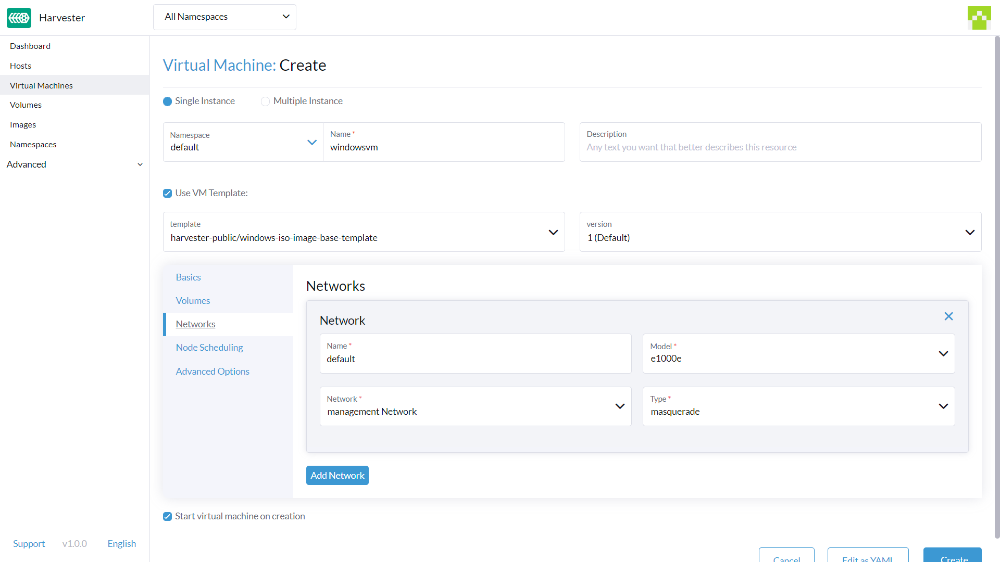
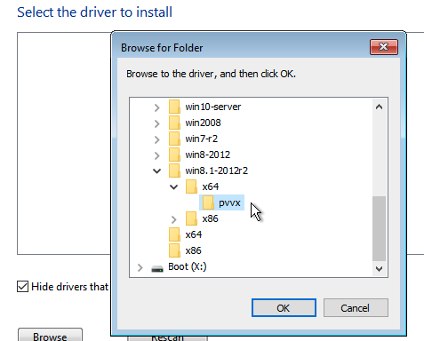
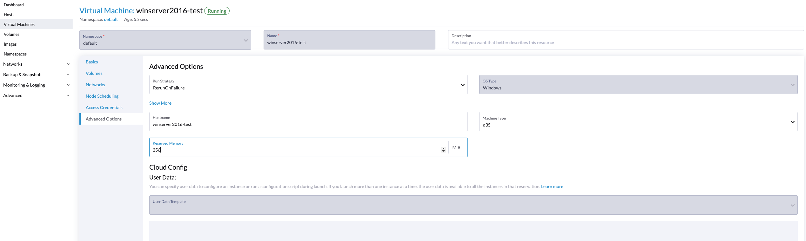

|
Ce document a été traduit à l'aide d'une technologie de traduction automatique. Bien que nous nous efforcions de fournir des traductions exactes, nous ne fournissons aucune garantie quant à l'exhaustivité, l'exactitude ou la fiabilité du contenu traduit. En cas de divergence, la version originale anglaise prévaut et fait foi. |
Créer une machine virtuelle Windows
Créez une ou plusieurs machines virtuelles à partir de la page Machines Virtuelles.
|
Pour créer des machines virtuelles Linux, veuillez vous référer à cette page. |
Comment créer une machine virtuelle Windows
Section d’en-tête
-
Créez une instance de machine virtuelle unique ou plusieurs instances de machines virtuelles.
-
Définissez le nom de la machine virtuelle.
-
(Optionnel) Fournissez une description pour la machine virtuelle.
-
(Optionnel) Sélectionnez le modèle de machine virtuelle
windows-iso-image-base-template. Ce modèle ajoutera un volume avec lesvirtiopilotes pour Windows.
Onglet de base
-
Configurez le nombre de
CPUcœurs attribués à la machine virtuelle. -
Configurez la quantité de
Memoryattribuée à la machine virtuelle.

|
Comme mentionné ci-dessus, il est recommandé d’utiliser le modèle de machine virtuelle Windows. La section |
|
Les valeurs |
Onglet Volumes
-
Le premier volume est un
Image Volumeavec les valeurs suivantes :-
Name: La valeurcdrom-diskest définie par défaut. Vous pouvez la conserver ou la changer. -
Type: Sélectionnezcd-rom. -
Image: Sélectionnez l’image Windows à installer. Voir Télécharger des images pour la description complète sur la façon de créer de nouvelles images. -
Size: La valeur20est définie par défaut. Vous pouvez la changer si votre image a une taille plus grande. -
Bus: La valeurSATAest définie par défaut. Il est recommandé de ne pas la changer.
-
-
Le deuxième volume est un
Volumeavec les valeurs suivantes :-
Name: La valeurrootdiskest définie par défaut. Vous pouvez la conserver ou la changer. -
Type: Sélectionnezdisk. -
StorageClass: Vous pouvez utiliser la StorageClass par défautharvester-longhornou en spécifier une personnalisée. -
Size: La valeur32est définie par défaut. Voir les exigences en matière d’espace disque pour Windows Server et Windows 11 avant de changer cette valeur. -
Bus: La valeurVirtIOest définie par défaut. Vous pouvez la conserver ou la changer pour les autres options disponibles,SATAouSCSI.
-
-
Le troisième volume est un
Containeravec les valeurs suivantes :-
Name: La valeurvirtio-container-diskest définie par défaut. Vous pouvez la conserver ou la changer. -
Type: Sélectionnezcd-rom. -
Docker Image: La valeurregistry.suse.com/suse/vmdp/vmdp:2.5.4.2est définie par défaut. Nous recommandons de ne pas changer cette valeur. -
Bus: La valeurSATAest définie par défaut. Nous recommandons de ne pas changer cette valeur.
-
-
Vous pouvez ajouter des disques supplémentaires en utilisant les boutons
Add Volume,Add Existing Volume,Add VM ImageouAdd Container.

Onglet Réseaux
-
Le Réseau de gestion est ajouté par défaut avec les valeurs suivantes :
-
Name: La valeurdefaultest définie par défaut. Vous pouvez le conserver ou le changer. -
Model: La valeure1000est définie par défaut. Vous pouvez le conserver ou le changer pour les autres options disponibles dans le menu déroulant. -
Network: La valeurmanagement Networkest définie par défaut. Vous ne pouvez pas changer cette option si aucun autre réseau n’a été créé. Voir Réseau VM pour la description complète sur la façon de créer de nouveaux réseaux. -
Type: La valeurmasqueradeest définie par défaut. Vous pouvez le conserver ou le changer pour l’autre option disponible,bridge.
-
-
Vous pouvez ajouter des réseaux supplémentaires en cliquant sur
Add Network.

|
Modifier les paramètres de |
Onglet de planification des nœuds
-
Node Schedulingest défini surRun VM on any available nodepar défaut. Vous pouvez le conserver ou le changer pour les autres options disponibles dans le menu déroulant.

Onglet Options avancées
-
OS Type: La valeurWindowsest définie par défaut. Il est recommandé de ne pas le changer. -
Machine Type: La valeurNoneest définie par défaut. Il est recommandé de ne pas le changer. Consultez la documentation KubeVirt Machine Type avant de modifier cette valeur. -
(Facultatif)
Hostname: Définissez le nom d’hôte de la machine virtuelle. -
(Facultatif)
Cloud Config: Les valeurs deUser DataetNetwork Datasont toutes deux définies avec des valeurs par défaut. Actuellement, ces configurations ne sont pas appliquées aux machines virtuelles basées sur Windows. -
(Facultatif)
Enable TPM,Booting in EFI mode,Secure Boot: Le dispositif TPM 2.0 et le firmware UEFI avec Secure Boot sont des exigences strictes pour Windows 11.
|
Actuellement, seuls les vTPM non persistants sont pris en charge, et leur état est effacé après chaque arrêt de la machine virtuelle. Par conséquent, Bitlocker ne doit pas être activé. |

Section de pied de page
Une fois tous les paramètres en place, cliquez sur Create.
|
Si vous devez ajouter des paramètres avancés, vous pouvez modifier la configuration de la machine virtuelle directement en cliquant sur |
Installation de Windows
-
Sélectionnez la machine virtuelle que vous venez de créer, puis cliquez sur
Start. -
Démarrez l’installateur et suivez les instructions données par l’installateur.
-
(Optionnel) Si vous utilisez des volumes basés sur
virtio, vous devrez charger le pilote spécifique pour permettre à l’installateur de les détecter. Si vous utilisez le modèle de machine virtuellewindows-iso-image-base-template, l’instruction est la suivante :-
Cliquez sur
Load driver, puis cliquez surBrowsedans la boîte de dialogue, et trouvez un lecteur CD-ROM avec un préfixeVMDP-WIN. Ensuite, trouvez le répertoire du pilote selon la version de Windows que vous installez ; par exemple, Windows Server 2012r2 devrait développerwin8.1-2012r2et choisir le répertoirepvvxà l’intérieur.
-
Cliquez sur
OKpour permettre à l’installateur de scanner ce répertoire à la recherche de pilotes, choisissezSUSE Block Driver for Windows, et cliquez surNextpour charger le pilote.
-
Attendez que l’installateur charge le pilote. Si vous choisissez la bonne version du pilote, les volumes
virtioseront détectés une fois le pilote chargé.
-
-
(Optionnel) Si vous utilisez d’autres matériels basés sur
virtiocomme un adaptateur réseau, vous devrez installer ces pilotes manuellement après avoir terminé l’installation. Pour installer des pilotes, ouvrez le disque de pilotes VMDP et utilisez l’installateur en fonction de votre plateforme.
La matrice de support du pack de pilotes VMDP pour Windows est la suivante (supposons que le chemin du lecteur CD-ROM VMDP soit E) :
| Version | Pris en charge | Chemin du pilote |
|---|---|---|
Windows 7 |
Non |
|
Windows Server 2008 |
Non |
|
Windows Server 2008r2 |
Non |
|
Windows 8 x86(x64) |
Oui |
|
Windows Server 2012 x86(x64) |
Oui |
|
Windows 8.1 x86(x64) |
Oui |
|
Windows Server 2012r2 x86(x64) |
Oui |
|
Windows 10 x86(x64) |
Oui |
|
Windows Server 2016 x86(x64) |
Oui |
|
Windows Server 2019 x86(x64) |
Oui |
|
Windows 11 x86(x64) |
Oui |
|
Windows Server 2022 x86(x64) |
Oui |
|
|
Si vous n’avez pas utilisé le modèle |
|
Pour des instructions complètes sur l’installation du pilote invité VMDP et des outils, consultez la documentation à https://documentation.suse.com/sle-vmdp/2.5/html/vmdp/index.html |
Problèmes connus
ISO Windows incapable de démarrer en mode EFI
Lorsque vous utilisez le mode EFI avec Windows, vous pouvez constater que le système a démarré avec d’autres appareils comme HDD ou un shell UEFI comme celui ci-dessous :

C’est parce que Windows demandera un Press any key to boot from CD or DVD… pour laisser l’utilisateur décider s’il souhaite démarrer à partir de l’ISO d’installation ou non, et cela nécessite une intervention humaine pour permettre au système de démarrer à partir du CD ou du DVD.

Alternativement, si le système a déjà démarré dans le shell UEFI, vous pouvez taper reset pour forcer le système à redémarrer. Une fois l’invite apparue, vous pouvez appuyer sur n’importe quelle touche pour permettre au système de démarrer à partir de l’ISO Windows.
La VM plante lorsque la mémoire réservée n’est pas suffisante
Il y a un problème connu avec la machine virtuelle Windows lorsqu’elle est allouée plus de 8GiB sans suffisamment de mémoire réservée configurée. La machine virtuelle plante sans avertissement.
Cela peut être corrigé en allouant au moins 256MiB de mémoire réservée au modèle dans l’onglet Options avancées. Si 256MiB ne fonctionne pas, essayez 512MiB.

BSoD (Écran bleu de la mort) au premier démarrage de Windows
Il existe un problème connu avec les machines virtuelles Windows utilisant Windows Server 2016 et des versions ultérieures, un BSoD avec le code d’erreur KMODE_EXCEPTION_NOT_HANDLED peut apparaître au premier démarrage de Windows. Nous continuons à l’examiner et nous corrigerons ce problème dans une future version.
En tant que solution de contournement, vous pouvez créer ou modifier le fichier /etc/modprobe.d/kvm.conf dans l’installation de SUSE Virtualization en mettant à jour /oem/99_custom.yaml comme ci-dessous :
name: Harvester Configuration
stages:
initramfs:
- commands: # ...
files:
- path: /etc/modprobe.d/kvm.conf
permissions: 384
owner: 0
group: 0
content: |
options kvm ignore_msrs=1
encoding: ""
ownerstring: ""
# ...|
Ceci est toujours une solution expérimentale. Pour plus d’informations, veuillez vous référer à ce problème et veuillez nous faire savoir si vous avez rencontré des problèmes après avoir appliqué cette solution de contournement. |